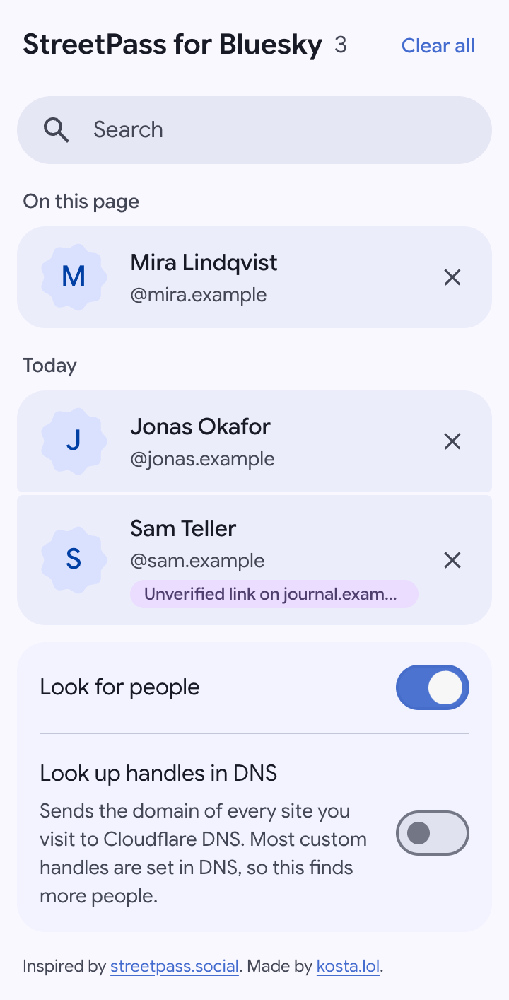

Domain handles
Many people use their own domain as their Bluesky handle. On every site you visit, the extension asks that site whether its domain is a handle, and checks the answer with Bluesky.
Finds the Bluesky accounts behind the sites you visit.
Version {{version}}. Source on GitHub

Many people use their own domain as their Bluesky handle. On every site you visit, the extension asks that site whether its domain is a handle, and checks the answer with Bluesky.
rel="me"
A site can link to its owner's Bluesky profile with
rel="me". Those people show up as unverified, because
any page can link to any profile.
Most custom handles are set in DNS. With DNS lookup on, the extension asks Cloudflare about the domain of every site you visit and finds those people too.
The extension isn't in the Chrome Web Store or on addons.mozilla.org yet, so it installs by hand.
chrome://extensions and turn on Developer mode.about:debugging and go to "This Firefox".Firefox removes unsigned add-ons when it restarts.